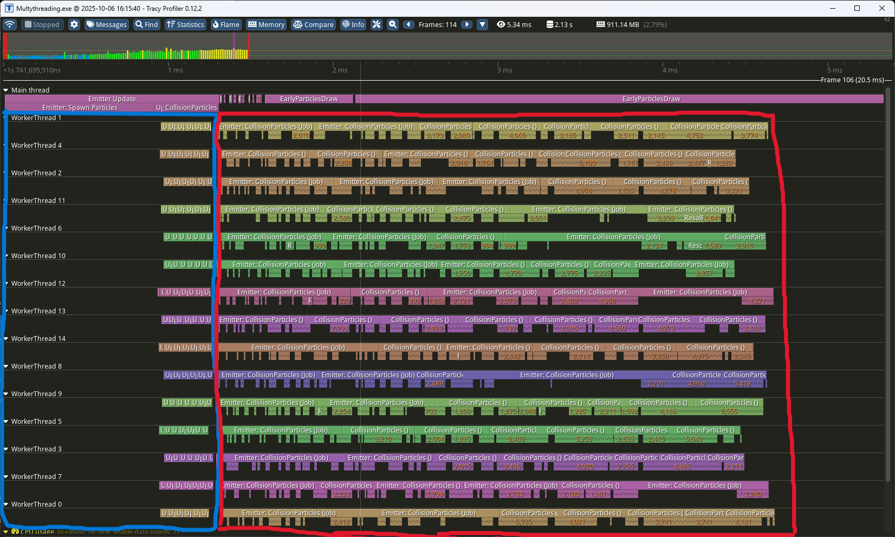
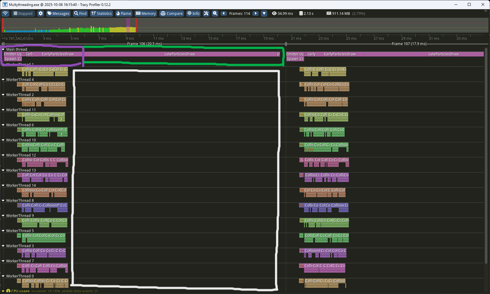
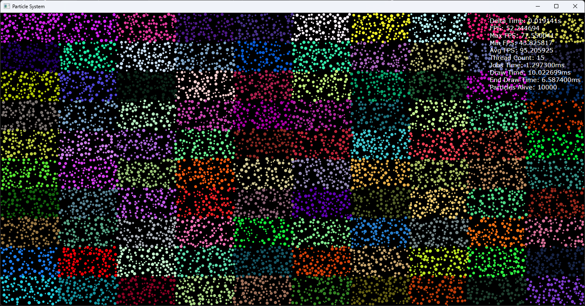

Multithreaded Particle System

Resume
Built a C++ multithreaded particle system where particles update life, position, and collisions in real time using a task-based architecture, with performance measured and analyzed using the Tracy profiler. More info here.
Showcase
Work Carried Out
I designed and developed a C++ multithreaded particle system built around a task-based architecture. The system updates particle life, position, and collisions in real time, efficiently distributing work across multiple threads to maximize performance and scalability.
During development, I focused on data-oriented design principles and efficient workload scheduling to achieve smooth simulation at high particle counts. Performance and timing metrics were continuously analyzed using the Tracy profiler to ensure optimal execution and minimal overhead.
The specific functionalities I developed include:
- Task-Based Architecture
- Parallel Updates, Collision Handling and Spatial Partitioning
- Real-Time Particle Simulation and Rendering Integration
- Performance Profiling and Optimization using Tracy
Multithreaded Particle System
One of the main objectives of this project was to design and implement a parallel particle simulation system capable of updating particle life, position, and collisions in real time while maintaining optimal CPU performance. The system was developed in C++ using a task-based multithreading architecture, designed to distribute workloads efficiently across all available cores.
This architecture allows thousands of particles to be processed simultaneously, reducing frame time and improving scalability. Each simulation step is divided into small jobs that are dispatched to worker threads through a custom Job System, ensuring smooth execution and minimal synchronization overhead.
In addition, the system integrates the Tracy profiler to analyze timing and workload distribution, enabling real-time performance tracking and continuous optimization of memory access patterns and thread utilization.



In these screenshots taken from the program using Tracy, we can see how the particles are being updated in the blue box, i.e., updating their position in relation to their speed, as well as placing them in one of the divisions of space to optimize the calculation of collisions. After that, in the red box, we can see how the collisions of the particles are being made, taking advantage of these spatial partitions.
With regard to the main thread, we can see how an early draw is being performed in the purple box, which consists of painting the particles that have already been completely updated instead of waiting for all of them to finish. Then the late draw is performed, where the rest of the particles are painted once their update has been completely finished.
In this demo, we can see that painting the particles takes a long time. A small optimization we could have made is to do a multi-frame update, that is, once we have finished updating all the particles, we could update the next frame while painting the ones in this frame.
Job System Architecture
At the core of the particle simulation lies the Job System, a lightweight and lock-less task scheduler designed for high concurrency. While not entirely lock-free, it achieves minimal contention through the careful use of spinlocks and read/write locks, ensuring efficient synchronization even under heavy workloads.
Job Declaration
Each job is defined as a std::function<void()>, allowing flexible encapsulation of any piece of work — from particle updates to collision checks — without rigid task definitions.
Thread Pool
Upon initialization, the system spawns one worker thread per logical processor minus one, reserving a core for the main thread. Each worker thread runs a persistent loop that waits for new jobs to be added to the shared queue. To maximize CPU cache locality and reduce context switching, each worker is assigned an affinity mask binding it to a specific logical core. The shared job queue is protected using spinlocks, providing lightweight synchronization suitable for very short critical sections.
Atomic Counters
Every group of dispatched jobs is associated with an atomic counter that tracks the number of active tasks. When a worker completes a job, it atomically decrements the counter, providing a fast, lock-less mechanism to signal progress. Read/write locks are used where necessary to manage counter lifecycle and prevent race conditions during allocation or freeing.